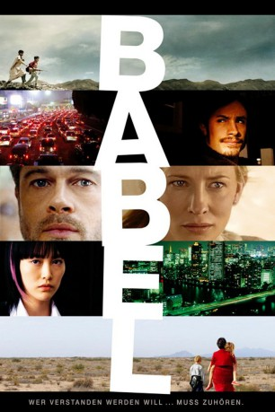

#468 Babel
Auszeichnungen: 1 Oscars gewonnen für 6 Oscars nominiert 1 GoldenGlobes gewonnen 1 BAFTA-Awards gewonnen
 
 IMDB-Wertung: 7.5 / 10
IMDB-Wertung: 7.5 / 10  Metascore: 69
Metascore: 69 
Ein Schuss in der Wüste von Marokko ist das auslösende Moment einer ganzen Kette von Ereignissen, die vier Schicksale von unterschiedlichen Menschen auf drei Kontinenten miteinander verbindet: Da ist ein amerikanischer Tourist, der in Marokko um das Leben seiner schwer verletzten Frau kämpft. Ein mexikanisches Kindermädchen, das verzweifelt versucht, die Grenze mit ihren beiden amerikanischen Schützlingen zu überqueren. Ein taubstummer japanischer Teenager, der gegen den eigenen Vater und dessen mysteriöse Vergangenheit rebelliert. Und zwei kleine Jungs auf der Flucht vor der eigenen Verantwortung. Geschichten und Schicksale, die nur scheinbar keine Verbindung haben.
Jahr: 2006
Dauer: 143 Minuten
FSK: 16
Land: Frankreich Studio: TOBIS FilmTonspuren: DTS - ,
Untertitel: Deutsch, Englisch,
Auflösung: 1080p (1920x1040) Größe: 15052 MB
Genre: Drama
Regisseur: Alejandro G. Iñárritu
Drehbuch: Guillermo Arriaga, Guillermo Arriaga, Alejandro G. Iñárritu
Soundtrack: Gustavo Santaolalla
Darsteller:
 Brad Pitt als Richard
Brad Pitt als Richard Cate Blanchett als Susan
Cate Blanchett als Susan Peter Wight als Tom
Peter Wight als Tom Harriet Walter als Lilly
Harriet Walter als Lilly Michael Maloney als James
Michael Maloney als James Dermot Crowley als Barth
Dermot Crowley als Barth Alex Jennings als Ken Clifford
Alex Jennings als Ken Clifford Adriana Barraza als Amelia
Adriana Barraza als Amelia Elle Fanning als Debbie Jones
Elle Fanning als Debbie Jones Nathan Gamble als Mike Jones
Nathan Gamble als Mike Jones Gael García Bernal als Santiago
Gael García Bernal als Santiago- Mónica Del Carmen als Lucia
 Emilio Echevarría als Emilio
Emilio Echevarría als Emilio Clifton Collins Jr. als Officer at Border Crossing
Clifton Collins Jr. als Officer at Border Crossing- Aaron D. Spears als Officer #2
- Jamie McBride als Bill - Border Patrol
 Michael Peña als John - Border Patrol
Michael Peña als John - Border Patrol- Ivor Shier als Helicopter Pilot
 R.D. Call als FBI Interrogation Officer
R.D. Call als FBI Interrogation Officer Rinko Kikuchi als Chieko Wataya
Rinko Kikuchi als Chieko Wataya Kôji Yakusho als Yasujiro Wataya
Kôji Yakusho als Yasujiro Wataya- Qyoko Kudo als Mother at Dentist
 Masami Kosaka als Japanese Guy , uncredited
Masami Kosaka als Japanese Guy , uncredited- Linda Sans als , uncredited
- Mohamed Akhzam als Anwar
- Trevor Martin als Douglas
- Matyelok Gibbs als Elyse
- Georges Bousquet als Robert
- Claudine Acs als Jane
- André Oumansky als Walter
- Wendy Nottingham als Tourist
- Henry Maratray als Tourist
- Linda Broughton als Tourist
- Jean Marc Hulot als Tourist
- Aline Mowat als Tourist
- Liliane Escoza als Tourist
- Lynsey Beauchamp als Tourist
- Michel Dubois als Tourist
- Shirley Dixon als Tourist
- Patrick Lebre als Tourist
- John O'Mohoney als Tourist
- Mary Mitchell als Tourist
- Edward Lyon als Tourist
 Robert Fyfe als Tourist
Robert Fyfe als Tourist- Abdelaziz Merzoug als Waiter Casbah
- Omar El Mallouli als Bus Driver
- El Hassan Ait Bablal als Old Man in Car
- Sfia Ait Benboullah als Anwar's Grandmother
- Hammou Aghrar als Doctor - Vet
- Mohamed Ait Lahcen als Sheik
Datei: X:\2006(A-F)\Babel (2006, FSK16, 1920x1040).mkv seit 27.02.2015
Festplatte: HD 2005(G-Z)-2006(A-Z)
 Es gibt insgesamt 56 Filme in der Gruppe '2006(A-F)'
Es gibt insgesamt 56 Filme in der Gruppe '2006(A-F)'